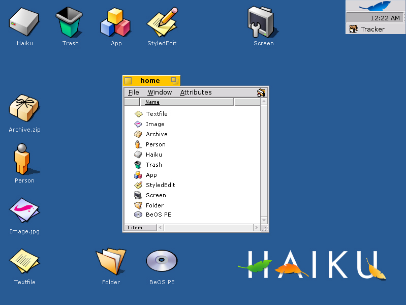

With this article, I want to introduce you to some interesting facts about the new Icon format that Haiku is using. At first sight, they are just scalable vector icons, and Haiku is not the only operating system to have them. But the interesting bits are in the implementation details which should make Haiku stand out from the rest.
The first unique feature is that Haiku uses a special vector storage format, that has been specifically designed to store icons; we call it the Haiku Vector Icon Format, or HVIF for short. Haiku is not using the SVG format. Support for that is available through SVG import and export features in the Haiku icon editor "Icon-O-Matic". HVIF saves so much space, that icons are typically even smaller than the BeOS bitmap icons, which use 1280 bytes. The average Haiku vector icon uses about 500-700 bytes, with some icons slightly over 1000 bytes and some even below 250 bytes. This means that an icon stored as an attribute of a file will fit in the so-called small data region, which resides within the inode of the file. When Tracker reads information about a file to display it, its name, size, date and also the icon are all read within a single disk operation, when the files inode is fetched. Obviously, this is very beneficial for speed, since the hard disk remains one of the slowest components of a computer. The only performance hit is rendering the icons, which is fast compared to the disk operation. If Haiku were to use SVG icons, we would need at least one extra seek after fetching the inode (as the icon is too big to fit in there), and this would have a severe impact in performance. To put the size of the Haiku icons into perspective, Windows Vista icons can use around 80Kb, as they use PNG images to store an icon at different sizes. SVG icons in ZETA can be stored compressed, and use 2-10 KB.
Another unique feature of the new icon format is that rendering is done in a single pass, touching each pixel only once. Typically, vector shapes are rendered in multiple passes, on top of each other if they overlap. With the Haiku icons, the geometrical information of every shape is collected all at once, solving the problem of visible seams between shapes that can often be observed with traditional multi-pass rendering. This comes through new features in the Anti-Grain Geometry rendering library that Haiku uses already for its on-screen drawing. The way it is done in AGG is also more efficient than multi-pass rendering.
Most of the vector icon code sits in a static library called libicon that is linked into libbe. As of yet, the classes it contains are not intended for widespread usage, as the implementation might still change and improve. But there is a new class available called BIconUtils, similar to BTranslationUtils. The purpose of this class is to give unified access to icons, and for loading them into BBitmaps. It handles old BeOS icons and the new vector icons transparently. BNode, BNodeInfo, BAppFileInfo and BMimeType have all been adjusted to load and save icons through the BIconUtils class. There was a lot of code duplication before that too. The vector icons are loaded through the same API that was available before. For example BNodeInfo::GetIcon(BBitmap* bitmap, icon_size size). The size argument is unfortunately a bit redundant, since the bitmap, which the caller must preallocate, provides a size anyways. In BeOS, the bitmap size must match the icon_size given. In Haiku, which icon an application gets, is determined by the colorspace of the provided bitmap. If it is B_RGBA32 (in which case the bitmap may be of any size with the icon_size argument being ignored), the vector icon is preferred. If the bitmap is B_CMAP8, the old BeOS icon is preferred. If only one type of icon is available from a file, it will be put into the provided bitmap with the necessary conversion. Unfortunately, BeOS will return just a white bitmap if you pass a B_RGBA32 bitmap to the icon loading functions - without returning an error. This means you need to take a bit of extra effort to write applications that use truecolor vector icons when running on Haiku and BeOS icons otherwise. If BeOS returned an error, you could have simply tried to pass a 32 bit bitmap first, and if that fails try again with 8 bit. Bummer.
Best rated Stippi icon set by Stephan AssmusMost applications in the Haiku tree already support the new vector icons. But Tracker and Deskbar have not received any special icon code. They have just been adopted to use B_RGBA32 bitmaps instead of B_CMAP8 bitmaps, and most problems have been fixed related to drawing icons with alpha blending. Where Tracker reads icons from its own resources, it has been adopted to prefer flat vector icon data which it passes through BIconUtils. Other than that, Tracker and Deskbar use the normal system API available to any other application. So in that sense, the vector icons are completely integrated with the system and thoroughly implemented in all API classes dealing with icons.
As of yet, the work on HVIF is not 100% complete yet. There are a few bugs to iron out, and support has yet to be added to device drivers which return icons. The biggest chunk of work is designing all the other icons in the system. An icon design guide is also currently in the works, which will explain the artistic rules of Haiku icons. Another document will explain how to use Icon-O-Matic, which is at the moment in quite a rough state. Hopefully, both document will encourage other artists to help us complete the Haiku icon set.